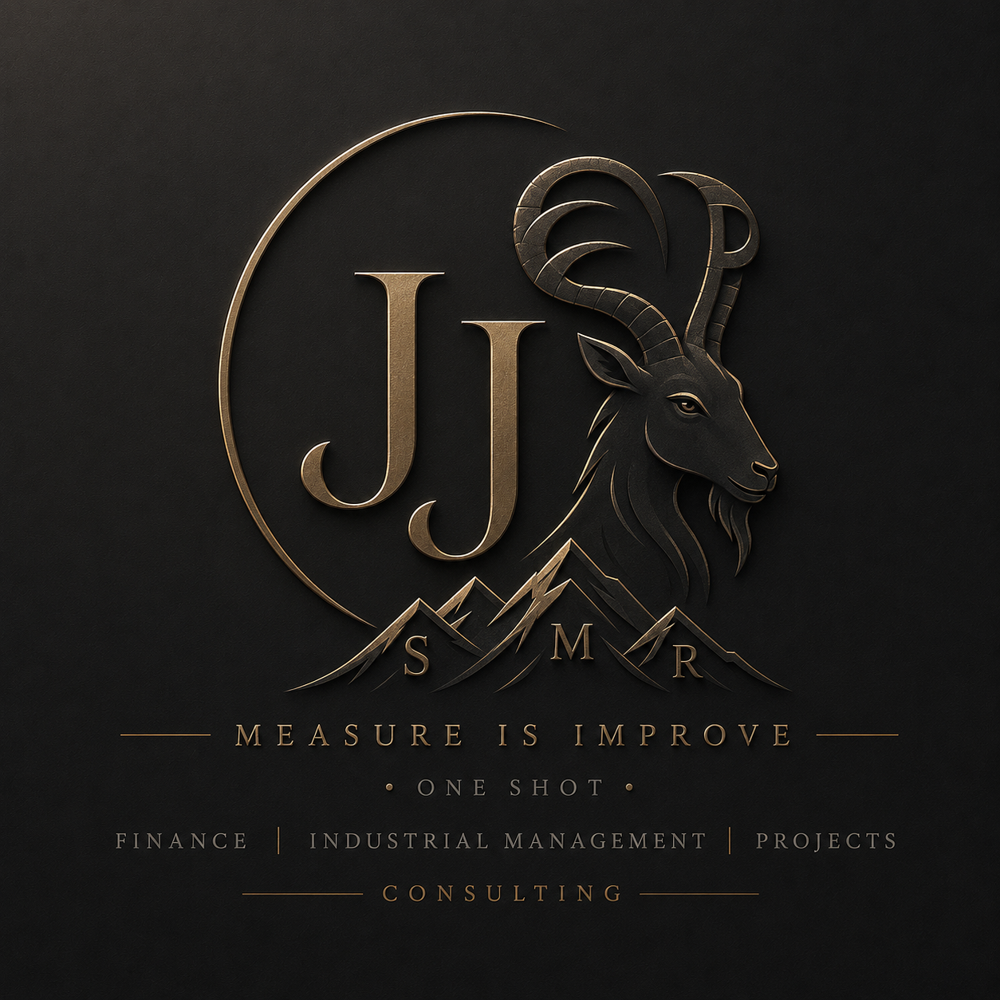

Business Intelligence | Power BI | Project Mannager| | Finanzas | Gestión Industrial
Transformamos datos, procesos y proyectos en resultados empresariales
Ayudamos a empresas a mejorar sus resultados mediante dashboards, indicadores financieros y consultoría especializada.
Solicitar AsesoríaDashboards interactivos, indicadores KPI y análisis para la toma de decisiones.
Análisis financiero, presupuestos, costos e indicadores de rentabilidad.
Planificación, programación y seguimiento de proyectos utilizando Microsoft Project y Primavera P6.
Optimización de procesos, productividad y mejora continua.
JJEP es una firma de consultoría enfocada en ayudar a las organizaciones a mejorar su desempeño mediante la gestión estratégica, análisis de datos y optimización de procesos.
Combinamos experiencia en gestión industrial, inteligencia de negocios y herramientas tecnológicas para transformar información en decisiones de valor.
Desarrollamos la planificación, programación y seguimiento de proyectos utilizando herramientas profesionales como Microsoft Project y Primavera P6, permitiendo una gestión eficiente del tiempo, recursos, costos y avances.
Convertimos datos operativos y financieros en indicadores claros para la toma de decisiones.
Identificamos oportunidades para reducir costos, mejorar procesos y aumentar la productividad.
Trabajamos con indicadores KPI para evaluar el impacto de cada iniciativa.
Analizamos las necesidades de cada organización para desarrollar soluciones alineadas con sus objetivos empresariales.
Transformamos información en indicadores claros que permiten tomar decisiones oportunas y efectivas.
Integramos conocimientos de gestión industrial, finanzas, procesos y planificación de proyectos.
Buscamos mejoras medibles en productividad, eficiencia y rentabilidad.
Analizamos información financiera y operativa para identificar oportunidades de ahorro y eficiencia.
Diseñamos dashboards e indicadores KPI que permiten visualizar el desempeño de la organización.
Planificamos y controlamos proyectos mediante Microsoft Project y Primavera P6 para mejorar tiempos, recursos y resultados.
Aplicamos herramientas de mejora continua para aumentar productividad y eficiencia operacional.
Compartiremos artículos sobre Business Intelligence, gestión industrial, planificación de proyectos, finanzas y mejora continua.
¿Necesitas mejorar tus procesos, analizar tus datos o gestionar un proyecto?
Solicita una asesoría personalizada con JJEP Consulting.
📧 jhonjaes07@gmail.com 📧 jonjaes0723@gmail.com
📱 WhatsApp: +502 4391-2279
Cuéntanos sobre tu necesidad y nos pondremos en contacto contigo.